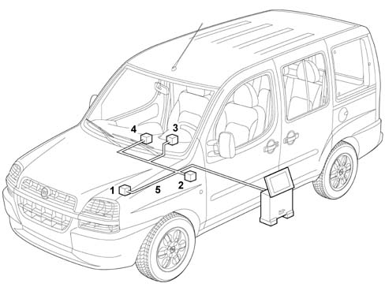
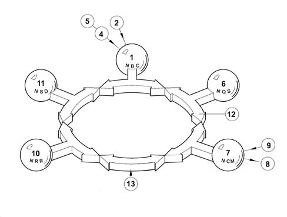
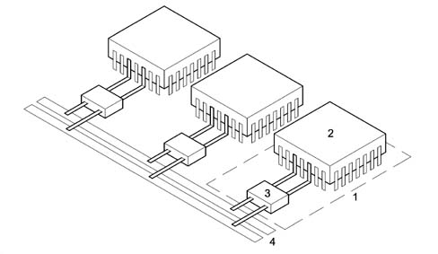
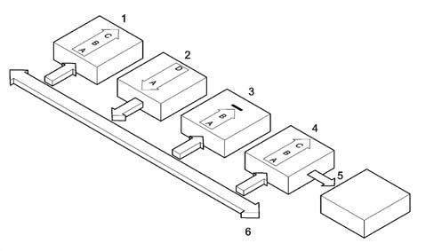
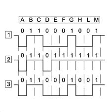

Introduction - ELECTRICAL CIRCUIT FOR INSTRUMENTS/INDICATORS
- Path
- Descriptions > 55 ELECTRICAL EQUIPMENT > 5505 INSTRUMENT/GUAGE ELECTRICAL WIRING > Introduction - ELECTRICAL CIRCUIT FOR INSTRUMENTS/INDICATORS
- Kind
- system description
- Applies to
- all engines; all production periods
- Interactive page
- https://sloeber94.github.io/elrnDB-fDbl/en/#/2585417
Applies to: all engines; all production periods
FUNCTIONS
'VeNICE' stands for Vehicle Network Integration Component Electronics.
For this reason, 'VeNICE' is a powerful software and hardware solution which efficiently manages the resources in the vehicle allowing:
- data to be shared between the various ECUs;
- several ECUs to be integrated in a network;
- high data exchange speed in the network;
- cost-effective solutions, since the number of wiring harnesses and connectors are considerably reduced in the vehicle;
- a higher standard in terms of quality and reliability.
The conventional 'VeNICE' architecture is shown in the following figure.

Applies to: all engines; all production periods
FUNCTIONS
In its most comprehensive configuration, the VeNICE system consists of the following parts:
- engine bay control unit (1) (electromechanical)
- facia node (2) (electromechanical/electronic)
- instrument panel node (3) (electronic)
- control panel node (4) (electromechanical and electronic)
- wiring (5)
Applies to: all engines; all production periods
SYSTEM ARCHITECTURE IN GENERAL
The various 'Node' ECUs in the system are connected to the CAN (17) via communication interfaces called 'Transceivers'.
The interfaces are built into the ECUs and form gates for sending/reading data on the CAN (12) or on the serial lines.

1 (NBC) Body Computer Node 2 Control panel 3 Steering wheel stalk unit 4 Brake control unit (ABS) 5. ABS sensors 6. Instrument Panel Node (NQS) 7. Engine Control Node (NCM) 8 NCM actuators 9 NCM sensors 10 Radio Node (NRR) 11. Examiner Tester Node (NSD) 12. Controller Area Network (CAN) 13. Serial line
Applies to: all engines; all production periods
SYSTEM ARCHITECTURE IN GENERAL
The following figure illustrates the communication interface:

1 NODE electronic unit 2 Microprocessor 3 Communication interface 4 CAN network (double)
Applies to: all engines; all production periods
SYSTEM ARCHITECTURE IN GENERAL
System designers assign control functions to the Body Computer in the VeNICE architecture (see relevant assembly for details on the NBC functions).
The additional Body Computer functions provide information on:
- network activity status;
- the functional failure status of individual node ECUs;
- CAN failure.
The Body Computer node 'wakes the system up' when the ignition key is turned to MAR.
In the event of an NBC failure, the network is woken up by the Instrument panel node (NQS) which intervenes only if the system is not woken up by the Body Computer for a certain time after the key is turned to MAR to prevent network conflicts.
Applies to: all engines; all production periods
OPERATING PRINCIPLES
Each 'Node' ECU processes the various signals from the respective sensors in order to manage themselves and the other ECUs.
For greater clarity, the following drawings illustrates a possible data sharing procedure between units connected in a network.

1 Body Computer node 2 Engine Control Node 3 Radio Receiver Node 4 Instrument Panel Node 5. Serial Line 6. CAN (double) A. Send/Read message B. Check message C. Accept message D. Create message
Applies to: all engines; all production periods
OPERATING PRINCIPLES
Example:
- The Engine control node (2) sends an rpm signal to the network (6).
- The Instrument panel node (4) reads the data and uses it to control the rev gauge to inform the driver of the engine rpm.
Applies to: all engines; all production periods
DATA TRANSMISSION PRIORITY
The VeNICE system employs a 'CSMA/CD' - Carrier Sense Multiple Access / Collision Avoiding - mechanism to allow several 'Node' ECUs simultaneous access to the network (double wire).
The CAN system is used because various ECUs interface and consequently a high number of signals is managed. A double copper wire CAN is therefore used. One wire is associated to the high level (H) and the other to the low level (L). The combined use of two wires and differential signals offers very strong signal communication even in environments with high electromagnetic interference.
The maximum number of distinct IDs for the CAN standard is 2032.
The following diagram shows simultaneous data transmission in the network to illustrate the transmission priority mechanism between nodes.

1 Electronic unit 'A' 2 Electronic unit 'B' 3 Information on network
Applies to: all engines; all production periods
DATA TRANSMISSION PRIORITY
As shown in the diagram, nodes (1) and (2) simultaneously send the same message to point (D).
Nodes (1) and (2) present a mismatching byte in point (E). In this condition, node (1) modifies the value of the node (2) byte taking it to a lower level.
Node (2) acknowledges that its byte has been changed and that another node with higher priority is transmitting. It immediately stops sending and stands by until node (1) frees the line.
It is important to note that while acknowledging transmitting priority, node (1) sends its message without interruption.
5505A, MULTIFUNCTION COMPONENTS